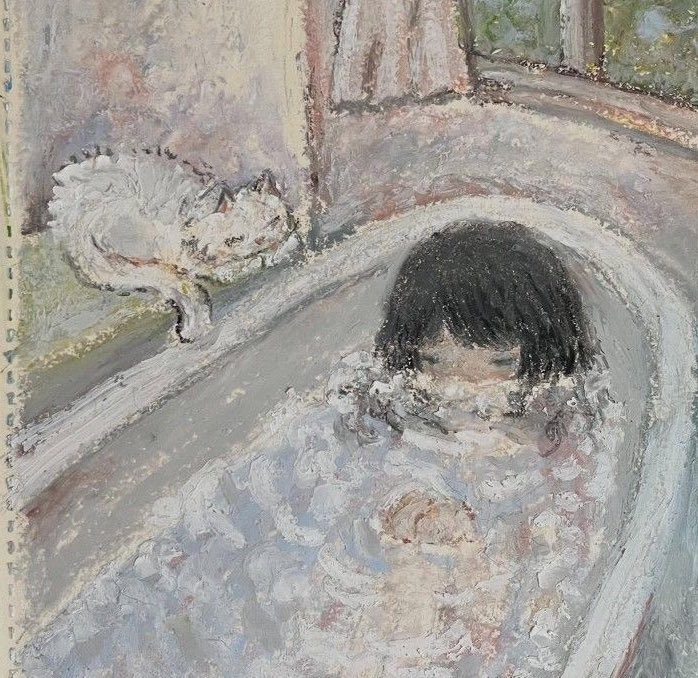

论隐瞒、羞涩和戏谑：一切秘密都被公之于众。“明晰性”在今天已是唯一的霸权（写作的明晰性是它的一个表达）。世界从此进入永恒的白日，过度呈现的无限透明性取消了人类中某种更为深刻的东西，某种深度、遮蔽和晦暗的维度。哲学的他者转向重新发现了这道深渊，并确立了他者相对于主体的优越地位。然而，在主体身上同样存在着这种“剩余的部分”，那就是作为一个他者之他者的我的存在，一种异己性。自我具有真正的强力：保持秘密的力量、在隐秘中行动、自我封闭和不可穿透性。“脸”（晦涩的身体）在这里依旧有其重要性，不透明的东西即身体，它作为一道墙壁包围了人的心灵——面孔，一张冷峻的面孔，掩饰了激情的暗流汹涌——这就是“隐瞒”的行动。总是存在着两种不同类型的隐瞒。“羞涩”，少女般的羞涩，在这第一种隐瞒中有一种诚实，这是对掩饰的不加掩饰。羞涩总是以一种更加迟疑和踌躇的方式演奏，它在给出自身这件事上陷入两难，因此它首先是一种对自身的拒予，这拒予本身却被赠送出来；羞涩总是留下一道转瞬即逝的痕迹，如同是掠过的气息和芬芳，施展出诱惑的魔力。尼采：真理-女人。距离和表象的游戏。变形的先知。追逐的儿童、时间的一段延迟。这种追逐的游戏会无限地进行下去，直到“告白”——作为明晰性的化身，它结束了羞涩，并使恋情作为一种标本和石化的东西，被固定在光天化日之中。另一类隐瞒则更加险恶，“戏谑”，它涉及到人类天性的狡诈和诡计：戏谑者以开显的方式隐瞒，从而假装自己是毫无隐瞒的。“这里已经没有秘密了，这就是全部的真相和终极的真实...“这隐瞒因此必须成为一种自身隐瞒，或者说，它必须是拒予的拒予、踪迹的自我涂抹，以便于阴谋家们在隐秘中行动。戏谑具有欺骗的结构，它必须乔装打扮，通过化妆和佩戴面具来制造出两个层级（表现和实在的层级），而戏谑者就同时在两个层级上进行运作。上当受骗者处在表现的层级上，他们并不知道自己所做的事情，出于自由感而宣称他在做”他想做的事情“。但是在第二个层级上，实际发生的事情恰恰相反，受骗者的自由活动只是阴谋家意图的实行。这里也存在一种诱惑，它使用误导的技术，以一种轻巧而不易察觉的方式将人引入歧途，而这种诱惑本身却力求不进入被引诱者的意识。例如说，苏格拉底式的佯谬，他装作无知，让对手陈述自己的观点，以实现辩证法的最终目的。
